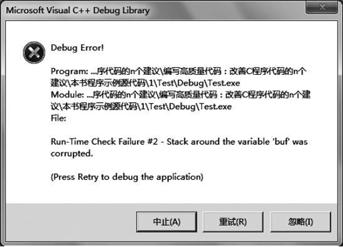
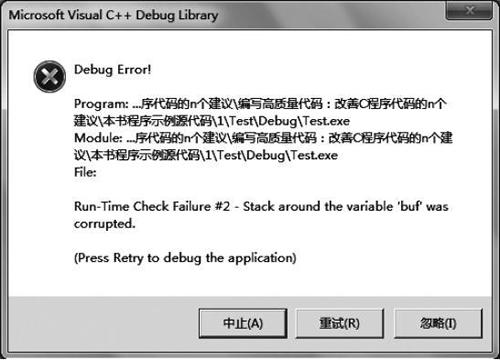

首页 > 编程笔记
位操作及其使用注意事项，C语言位操作及其使用方法详解
我们知道，程序中的所有数据在计算机内存中都是以二进制的形式进行存储的，数据的位是可以操作的最小数据单位，位操作就是直接对整数在内存中的二进制位进行操作。因此，在理论上，我们可以通过“位运算”来完成所有的运算和操作，从而有效地提高程序运行的效率。
C 语言中提供了 &（与）、|（或）、^（异或）、~（取反）、>>（右移）、<<（左移）6 种位操作符。我们可以在程序中合理地使用这些位操作符号来提高程序的运行效率，例如，对于下面的示例代码：
下面来看一个简单的示例:
如果在编译器 VC++ 中执行这段程序，将会产生如图 1 所示的错误报告。

图 1
在 C99 中，要修正这样的错误，最好利用 snprintf 方法来代替 sprintf 方法。因为 snprintf 方法最多从源串中复制 n-1 个字符到目标串中，然后再从后面加一个 0。因此，如果目标串的大小为 n，将不会产生溢出。
当然，如果将变量 y 声明成为无符号类型，即将：
其实答案由具体的 C 语言编译器实现来决定。在通常情况下，如果要进行移位的操作数是无符号类型的，那么空出的位将用 0 进行填充；如果要进行移位的操作数是有符号类型的，则 C 语言编译器实现既可选择 0 来进行填充，也可选择符号位进行填充。
因此，如果很关心一个右移运算中的空位，那么可以使用 unsigned 修饰符来声明变量，这样空位都会被设置为 0。同时，如果一个程序采用了有符号数的右移位操作，那么它就是不可移植的。
其实不然，有些优化编译器会比我们做得更好。以整数乘法为例，如果目标系统有乘法指令，硬件的乘法比自己用移位操作实现的乘法要快得多；如果目标系统没有乘法指令，编译器会自动用移位等操作来优化乘法，示例代码如下：
除此之外，采用移位操作还需要注意不要超过该数据类型的精度范围（数据范围），示例代码如下：
C 语言中提供了 &（与）、|（或）、^（异或）、~（取反）、>>（右移）、<<（左移）6 种位操作符。我们可以在程序中合理地使用这些位操作符号来提高程序的运行效率，例如，对于下面的示例代码：
int x=0; int y=0; x = 257 /8; y = 456 % 32;我们可以通过位操作符将其修改成如下形式：
int x=0; int y=0; x = 257 >>3; y = 456 - (456 >> 4 << 4);这样就可以使程序在性能上得到一定提升。
尽量避免对未知的有符号数执行位操作
在 C 语言中，如果在未知的有符号数上执行位操作，很可能会导致缓冲区溢出，从而在某些情况下导致攻击者执行任意代码，同时，还可能会出现出乎意料的行为或编译器定义的行为。下面来看一个简单的示例:
#include <stdio.h>
int main (void)
{
int x=0;
int y=0x80000000;
char buf[sizeof("128")];
x=sprintf(buf,"%u",y>>24);
if(x==-1||x>=sizeof(buf))
{
// 错误处理
}
printf(buf);
return 0;
}
代码中，y>>24 的执行结果为 4294967168，而 sizeof(buf) 的结果为 4。当我们将 y>>24 的结果值转换为字符串“4294967168”时，超出了 buf 范围，所以结果值无法完全存储在 buf 中。因此，在执行语句“x=sprintf(buf,"%u",y>>24)”时，sprintf 方法在进行写操作时就会越过 buf 的边界，从而产生缓冲区溢出。如果在编译器 VC++ 中执行这段程序，将会产生如图 1 所示的错误报告。

图 1
在 C99 中，要修正这样的错误，最好利用 snprintf 方法来代替 sprintf 方法。因为 snprintf 方法最多从源串中复制 n-1 个字符到目标串中，然后再从后面加一个 0。因此，如果目标串的大小为 n，将不会产生溢出。
当然，如果将变量 y 声明成为无符号类型，即将：
int y=0x80000000;修改为：
unsigned int y = 0x80000000;那么这种缓冲区溢出错误将不会发生。
在右移中合理地选择 0 或符号位来填充空出的位
在右移运算中，空出的位用 0 还是符号位进行填充呢？其实答案由具体的 C 语言编译器实现来决定。在通常情况下，如果要进行移位的操作数是无符号类型的，那么空出的位将用 0 进行填充；如果要进行移位的操作数是有符号类型的，则 C 语言编译器实现既可选择 0 来进行填充，也可选择符号位进行填充。
因此，如果很关心一个右移运算中的空位，那么可以使用 unsigned 修饰符来声明变量，这样空位都会被设置为 0。同时，如果一个程序采用了有符号数的右移位操作，那么它就是不可移植的。
移位的数量必须大于等于 0 且小于操作数的位数
如果被移位的操作数的长度为 n，那么移位的数量必须大于等于 0 且小于 n。因此，在一次单独的操作中不可能将所有的位从变量中移出。例如，一个 int 型的整数是 32 位，并且 n 是一个 int 型整数，那么 n<<31 和 n<<0 是合法的，但 n<<32 和 n<<-1 是不合法的。因此，我们在进行移位运算的时候必须做相关测试。示例代码如下所示：
unsigned int x;
unsigned int y;
unsigned int result;
/*初始x，y，result*/
if(y>=sizeof(unsigned int) * CHAR_BIT)
{
// 错误处理
}
else
{
result=x>>y;
}
这里还需要说明的是，对于变量 x 与 y，C99 规定：
- 对于 x<y 可以用结果类型表示，那么这个表达式就是结果值，否则，其行为是未定义的；如果 x 是无符号类型，则 x< y，是根据“结果类型可以表达的最大值加 1”进行求模运算得到的结果。需要注意的是，尽管在 C99 中指定了无符号整数的取模行为，无符号整数溢出还是常常导致出乎意料的值以及因此产生的潜在安全风险。
- 对于 x>>y，如果 x 是无符号类型或非负值的有符号类型，那么 x>>y 的移位结果为 x/2y 的商的整数部分；如果 x 是有符号类型的负值，那么 x>>y 的移位结果是由编译器所定义的。因此，对一个带符号整数进行右移运算和将它除以 2 的某次幂不一定是等价的。要证明这一点很容易，考虑 (-1)>>1 的值，它的执行结果不可能为 0，而在大多数 C 语言编译器中 (-1)/2 的结果都是 0。
尽量避免在同一个数据上执行位操作与算术运算
虽然位操作在很大程度上可以提高程序的执行效率，但在同一个变量上执行位操作和算术运算会模糊程序员的意图，削弱代码的可移植性与可读性，还会导致安全审核员或代码维护人员难以确定应该执行什么检查以消除安全缺陷，保证数据的完整性。示例代码如下：unsigned int x=10; x+=(x<<3)-5;虽然上面的代码是一条合法的优化语句，但是它的确严重地破坏了程序的可读性。因此，建议采用下面的方式来书写代码：
unsigned int x=10; x=x*9-5;或许这时候有读者会问，这样写代码不就降低了程序的执行效率吗？
其实不然，有些优化编译器会比我们做得更好。以整数乘法为例，如果目标系统有乘法指令，硬件的乘法比自己用移位操作实现的乘法要快得多；如果目标系统没有乘法指令，编译器会自动用移位等操作来优化乘法，示例代码如下：
unsigned int x=8; unsigned int y=x*4; unsigned int z=x/2;上面的代码在 Microsoft Visual Studio 2010 集成开发环境 VC++ 的 Debug 模式下将生成如下汇编代码：
unsigned int x=8； 00DB139E mov dword ptr [x]，8 unsigned int y=x*4； 00DB13A5 mov eax，dword ptr [x] 00DB13A8 shl eax，2 00DB13AB mov dword ptr [y]，eax unsigned int z=x/2； 00DB13AE mov eax，dword ptr [x] 00DB13B1 shr eax，1 00DB13B3 mov dword ptr [z]，eax从上面的汇编代码可以看出，编译器会自动在汇编代码中用移位操作来优化乘除法运算。因此，完全没有必要用手工进行这种优化，编译器会自动完成。我们应该把精力放在改进程序的算法上，一个好的算法可以使程序运行效率大大提高。当然，如果除数为 2 的幂，那么在进行除法运算时可以适当地采用移位算法来实现乘除法。
除此之外，采用移位操作还需要注意不要超过该数据类型的精度范围（数据范围），示例代码如下：
#include <stdio.h>
int main (void)
{
int x=-2147483647;
x=x<<1;
printf("%d \n",x);
return 0;
}
在上面的代码中就要注意精度问题，在 32 位系统中，int 类型占 4 个字节，精度范围为“-2147483647~2147483647”。其中，数据“-2147483647”的原码为“11111111111111111111111111111111”，补码为“10000000000000000000000000000001”。现在将“10000000000000000000000000000001”左移 1 位，最高位的1没有了，最低位左移一位，得到的结果为 2。关注公众号「站长严长生」，在手机上阅读所有教程，随时随地都能学习。内含一款搜索神器，免费下载全网书籍和视频。

微信扫码关注公众号